-
背景
路网通是是一个数据管理平台。为了更好的管理数据，我们需要数据本身具备一些特殊的属性来区分归类， 但不是所有的属性都可以从解码获取。因此，我们需要人为的给数据指定一些特殊的属性。这个指定的过程，就要用到路径设置工具来完成。
-
工具名称
DirParseCfgTool.exe
-
登陆界面

输入正确的数据库信息，点击 OK 按钮即可登陆。
-
工作界面
现在使用的版本有两个，一个是旧版的，一个是新版的，布局不同，操作都一样。
-
新版本
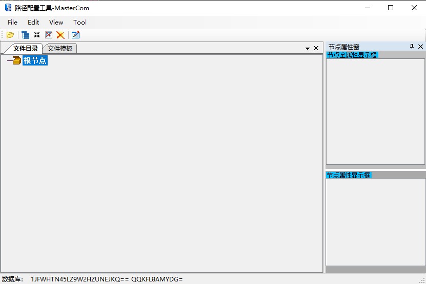 -
旧版本
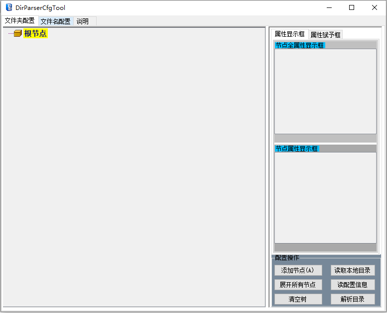
-
-
配置操作
-
初次使用
首次使用，请注意保存本来的配置，以免导致数据的丢失。当您完成了相关的配置并点击“解析目录”按钮弹出解析窗口，在写入配置前，请务必先进行“保存数据库配置到sql脚本”。
-
路径文件夹配置
如果是第一次配置，那么就只有一个根目录，如果要在添加路径的话，直接在根目录上右键，选择添加单个目录、添加多个目录功能添加，添加完后，单机添加的目录节点修改名字即可。
如果是想在已有的目录节点上添加，那就直接在对应目录节点上右击添加即可。
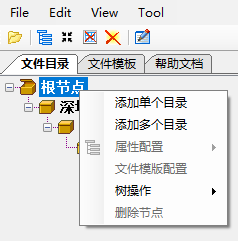 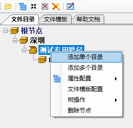 -
给路径节点配置属性
配置属性，也是在路径节点上右键，选择属性配置，然后在子菜单中选择属性单击即可。如，我要在DT测试的文件夹上添加一个年份的属性，如下操作：
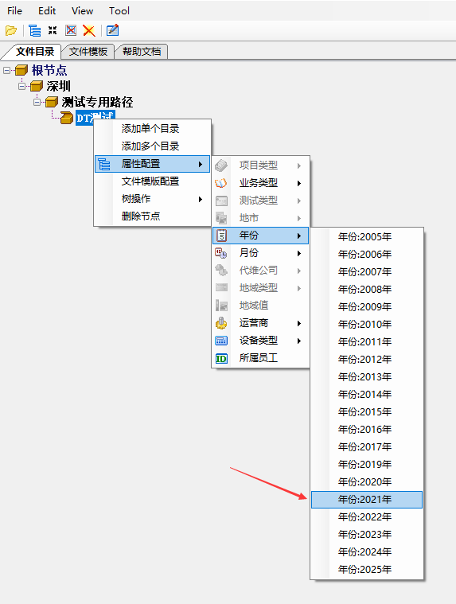添加后的属性显示如下：
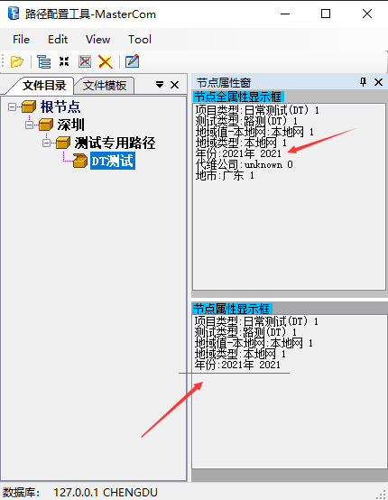如果要删除属性，就直接选中要删除的属性，然后右键删除属性即可。
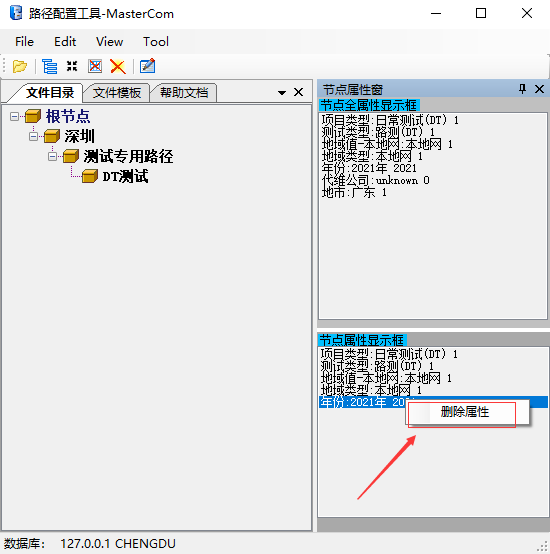 -
配置文件模版
单击文件模版页，文件名解析模版的操作界面就在这里。
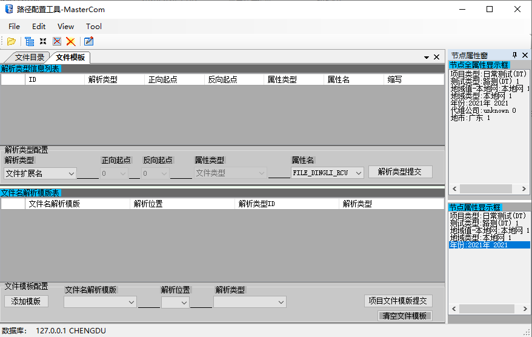
可以发现，文件模版的配置需要两个部分：文件名解析模版表、解析类型信息列表。如下所示：解析类型信息配置
如果解析类型列表中有你需要的类型，那么可以直接配置文件名解析模版表。如果没有，则要先配置解析类型信息表。
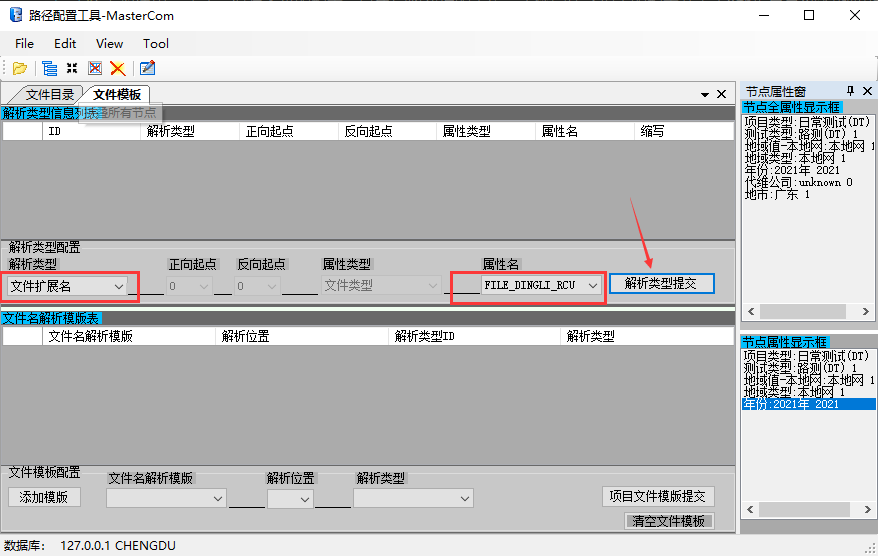
比如我想配置一个鼎利的rcu文件解析类型。即我想让鼎利的RCU文件可以被解析。那么我需要在解析类型中选择文件扩展名， 然后在属性名中选择 FILE_DINGLI_RCU，然后单击解析类型提交按钮单击解析类型提交按钮后出现如下对话框，填写文件后缀名，点击 OK 按钮。
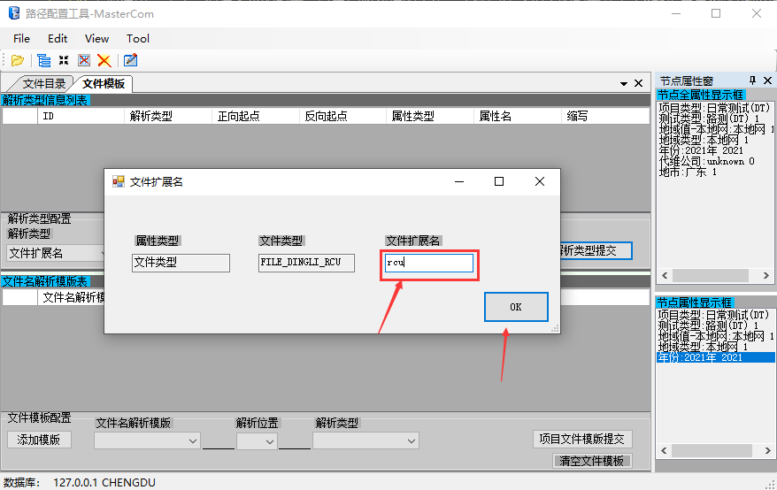添加的解析文件后缀名的类型就会显示在列表中如下所示：
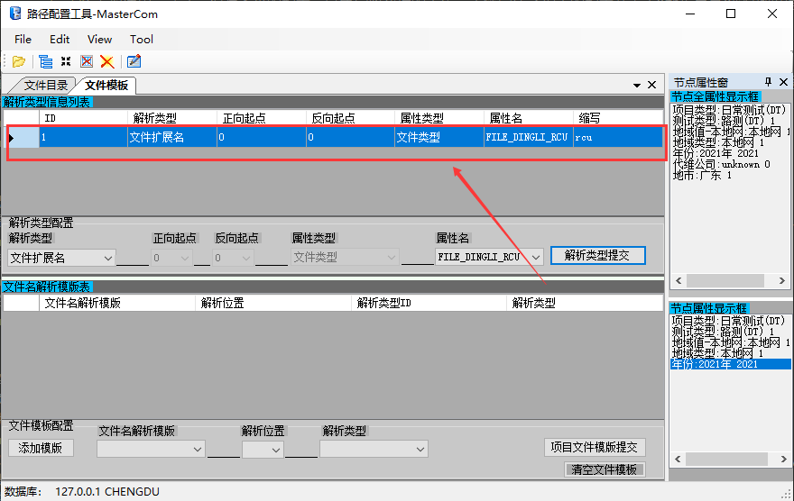文件名解析模版配置
在文件名解析模版表区域内，选择添加模版，出现如下对话框，给模版起一个名字。最好用英文。然后点击 OK 按钮。
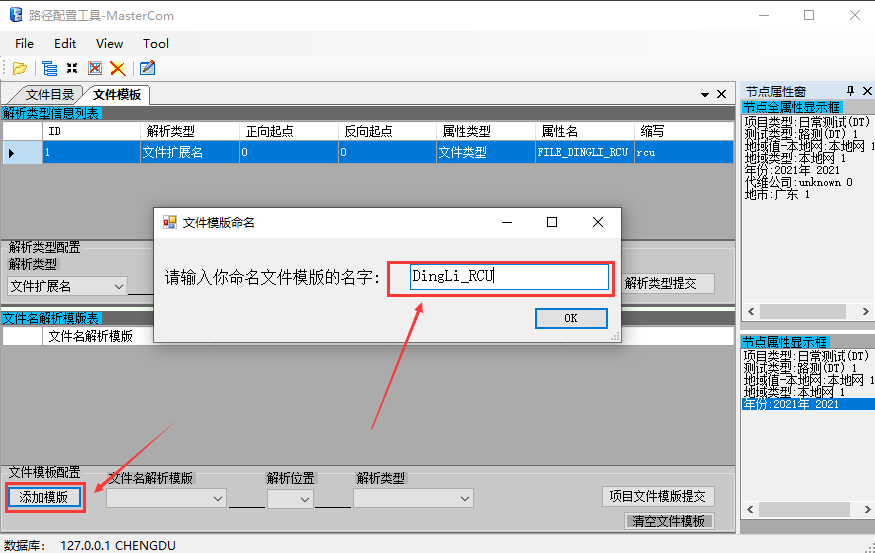接着在文件名解析模版下来菜单中选择刚刚新建的模版 DingLi_RCU，这里如果是文件后缀名的话，解析的位置选择 -1，然后解析类型选前面配置的解析类型，注意编号选对。
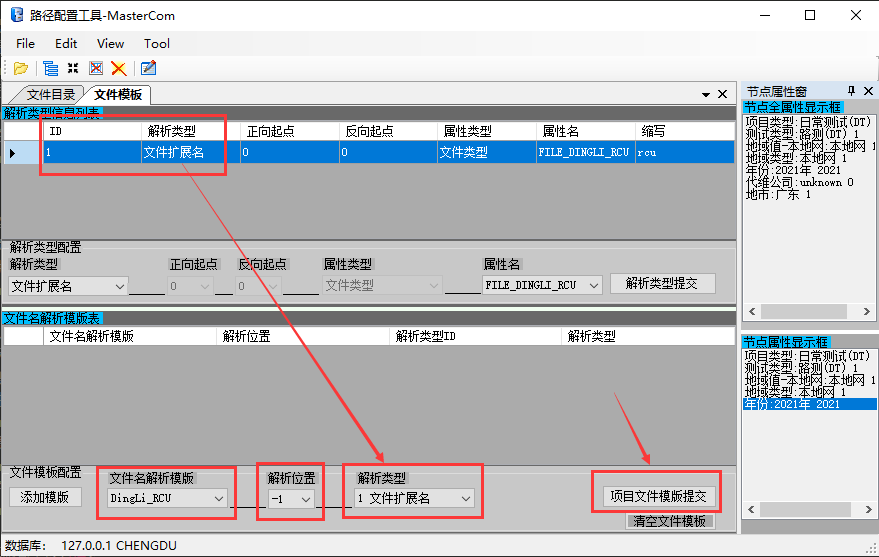点击项目文件模版提交，之后配置的解析模版就会在模版列表中出现。
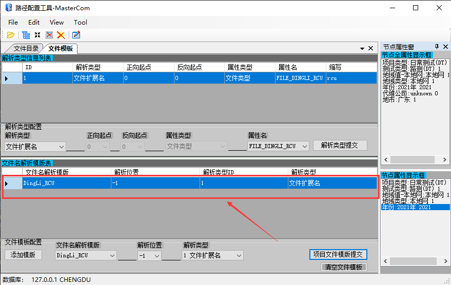将文件名解析模版添加到路径节点属性中
回到文件目录页，比如想在DT测试目录上添加刚刚的文件模版，直接在DT测试目录上右键菜单中选择文件模版配置，选择对应的文件模版名即可。
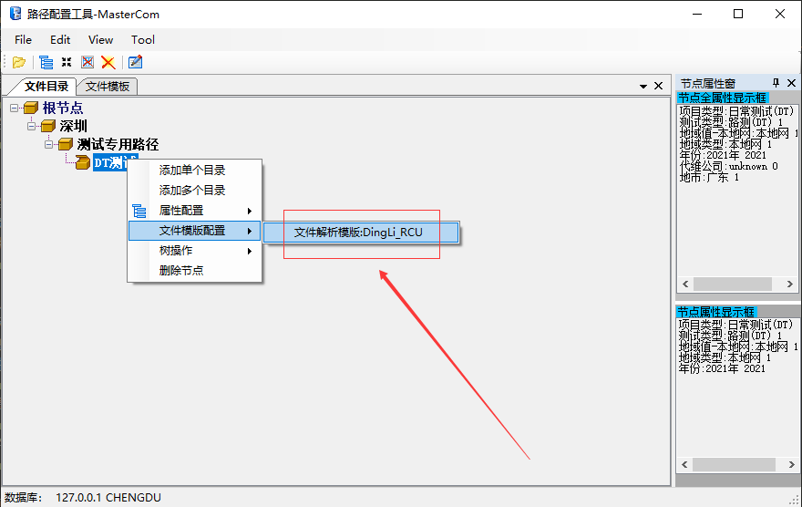配置好之后，会显示在右侧的属性栏中，如下图所示：
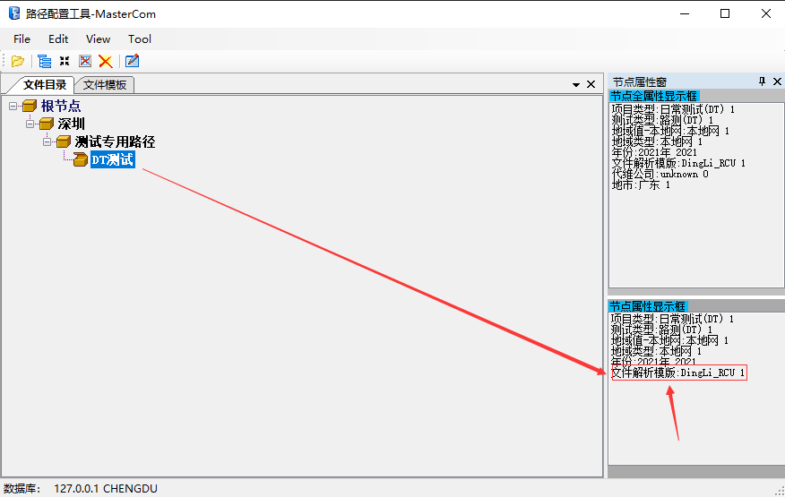
到这里，路径解析的配置过程就讲完了。接下来看如何将配置的提交给数据库。
-
-
提交配置到数据库
1.点击菜单栏中的 Edit --> Parse Coinfig选项，进行配置解析。如下图：
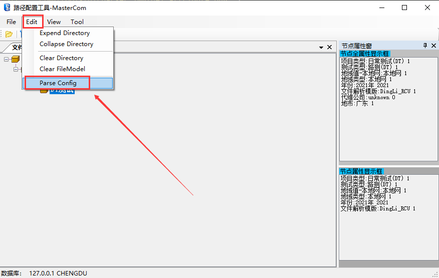如果是旧版本则点击右下角的解析目录，如下图所示：
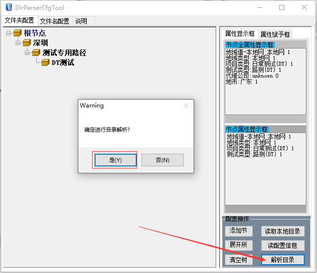2.在出现的对话框中选择 “是"，如下图：
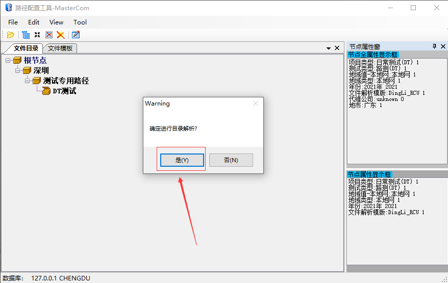然后进入文件解析页面，如下图：
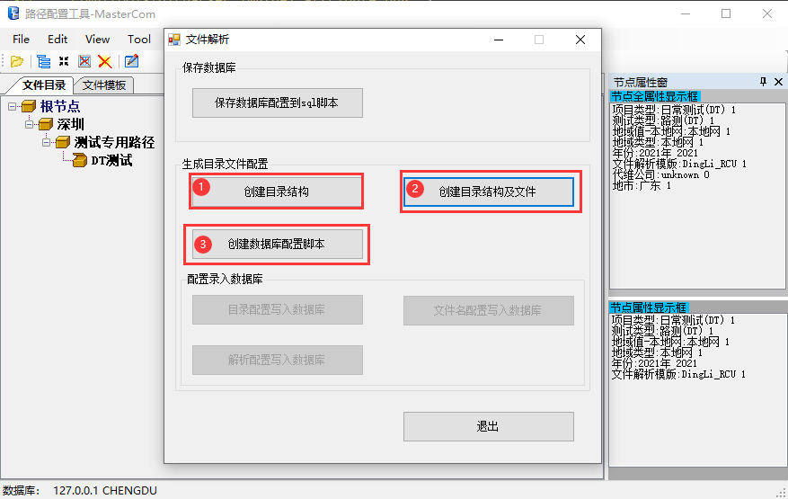-
创建目录结构: 将配置的目录结构生成到硬盘上。这样就可以直接复制到 FTP 目录下了。
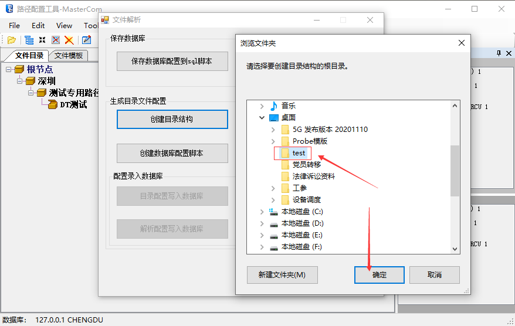 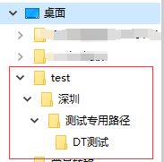 -
创建数据库配置脚本：根据配置生成数据库脚本，用于备份配置的操作。
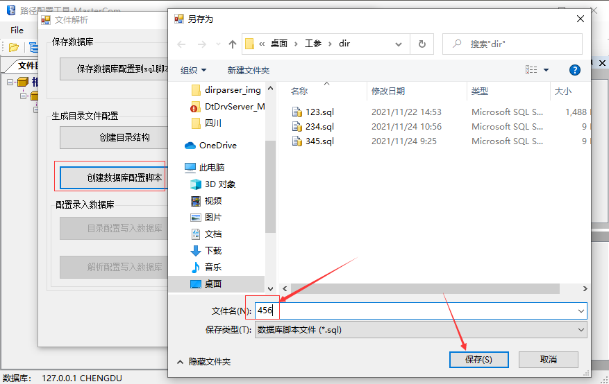
创建完脚本后，配置录入数据库的区域才能操作。此时点击解析配置写入数据库，等待提示配置写入完成后，点击确定，然后点击退出即可。
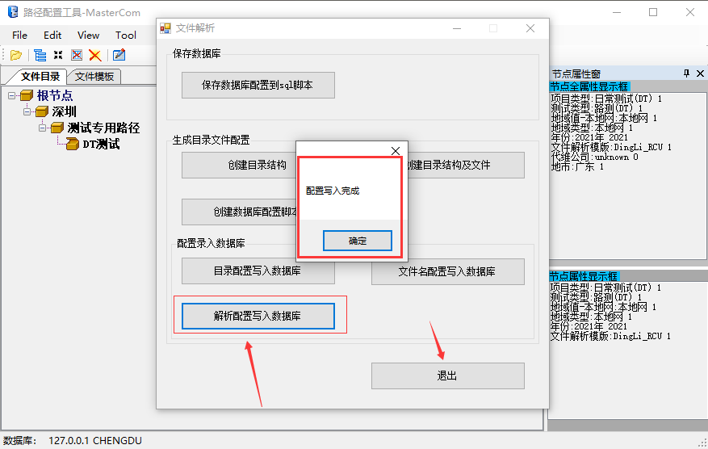 -
-
重点说明
-
文件名模版中的解析位置是什么？
如果是配置的解析类型是文件后缀名，那么解析位置就是 -1 。
如果配置的是其它，那么将文件名按下划线分割，最开始的位置为0，以此往后加 1 即为解析位置。
比如一个文件名为：上海_20210908_移动_区县道路_威远县网格1.rcu，用下划线分割后各个部分的解析位置编号如下：
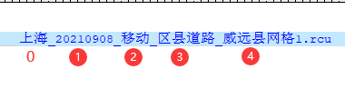- 解析类型为文件后缀名，那么解析位置就是 -1 。
- 解析类型为地域类型，那么解析位置就是 3 ，即 区县道路 。
- 解析类型为日期，那么解析位置就是 1 ，即 20210908。
-
烽火无后缀的文件模版如何配置。
烽火的扫频数据文件是无后缀的，以前的方法是，这种文件配置不了后缀名，所以需要指定其它解析类型，但是问题在于， 其它的解析类型都会对应一个解析位置，如果上传的人不按规定的解析位置命名文件的话，上传之后是无法路径解析成功的。所以现在开发了一种更方便的处理方式。
方式就是，对于烽火的无后缀名的文件，在配置解析类型的时候，填写后缀名为 noExt，这样解码在路径解析的时候就会知道是无后缀的文件，可以路径解析成功。 简化配置复杂度，增加了兼容性。
-
-
结束语
真拼命和真懒惰的人都没有太多的情绪，真正痛苦的是那些被教育得要上进，但骨子里又没那么认真的人： 工作是痛苦，偷懒也是痛苦，永远放不低，又永远无法真正拿得住，怎么都拧巴，怎么都不快乐。这一生，就蹉跎在自我羞辱和自我原谅中。